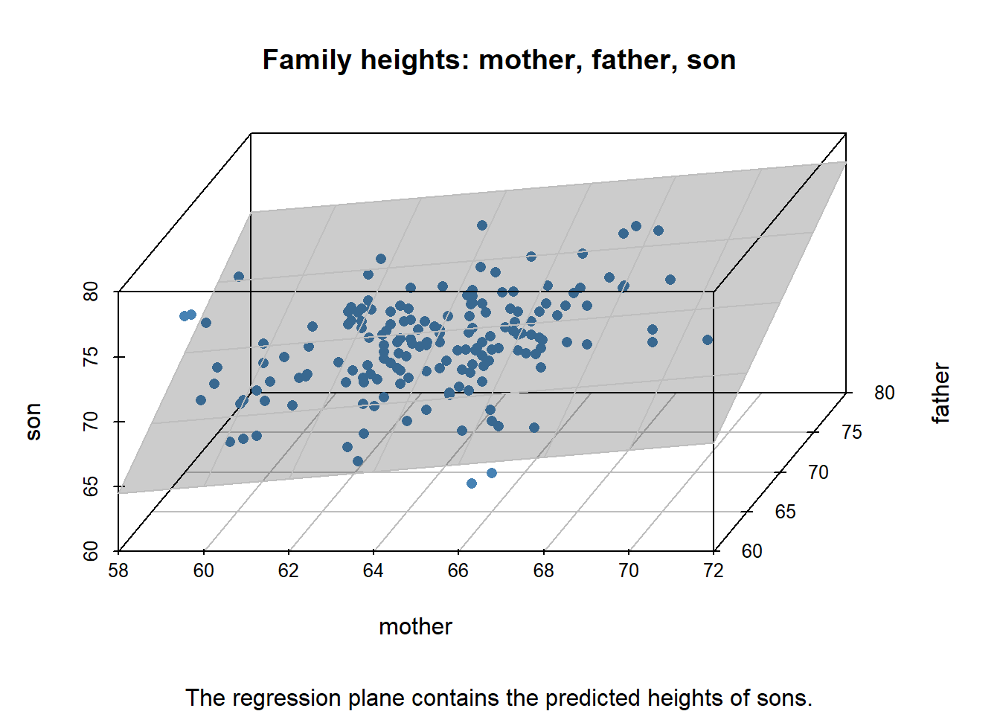

| family | father | mother | child | gender |
|---|---|---|---|---|
| 001 | 78.5 | 67.0 | 73.2 | male |
| 002 | 75.5 | 66.5 | 73.5 | male |
| 003 | 75.0 | 64.0 | 71.0 | male |
| 004 | 75.0 | 64.0 | 70.5 | male |
| 005 | 75.0 | 58.5 | 72.0 | male |
| 006 | 74.0 | 68.0 | 69.5 | female |
6 Linear Regression
Vectors and matrices are the central objects of linear algebra. And central to data science and machine learning is the notion of a data matrix, in which each row is composed of different types of values that represent a single case of data. For example, a single row of a data matrix might represent the recorded characteristics of an individual participant, item, or unit in some study. In contrast, each column (known as a feature vector or data variable) represents multiple instances of just one of these prescribed types of value. 1
This chapter presents linear regression from the perspective of linear algebra. A response variable \(y\) is modeled as some linear combination of feature vectors plus a residual error term. We begin with some examples.
6.1 Data Examples
6.1.1 Heights of Parents and Oldest Child
In 1885 Sir Francis Galton examined the heights (in inches) of parents and their adult children to determine the strength of evidence to support height as a hereditary trait. The corresponding R data set HistData::GaltonFamilies consists of 934 adult children from a total of 205 families. Restricting attention to the oldest child in each family, there were 26 daughters and 179 sons.
The table below shows a portion of this data matrix. Each row represents a family and consists of: a family identifier, the father’s height, the mother’s height, the oldest child’s height, and the oldest child’s gender.
The figure below represents all the families, with the gender of the oldest child distinguished by color: red for daughters and blue for sons.

In Chapter 2 we regressed the son’s height on the father’s height. We obtained the regression line, which approximates the graph of averages: the average son’s height per father’s height. The linear regression can be interpreted as a linear prediction of the height of a son whose father is of some given height.
We can now expand on this idea by regressing the son’s height on the heights of both the mother and the father. This is a model in which the predicted son’s height, \(\hat{s}\), is some constant plus some linear combination of the parents’ heights.
\[ \begin{align} \hat{s} & = \mathcal{l}_{R}(m, f) \\ &= \beta_0 \; + \; \beta_m \times m \; + \; \beta_f \times f \end{align} \qquad(6.1)\]
where
\[ \begin{align} \hat{s} &= \text{predicted height of son} \\ m &= \text{height of mother} \\ f &= \text{height of father} \end{align} \qquad(6.2)\]
Each set of coefficient values determines some plane in the 3-dimensional space of (mother, father, son) heights. The coefficients \((\hat{\beta}_0, \hat{\beta}_m, \hat{\beta}_f)\) obtained by linear regression determine the regression plane (Figure 6.2) that gives the best linear approximation \((\hat{s})\) to the son’s height for a given pair of parent heights \((m, f)\). 2

In vector-matrix notation we are seeking a vector \((\hat{\beta}_0, \hat{\beta}_m, \hat{\beta}_f)\) of coefficient values that yields the least-squares solution to the following linear approximation problem.
\[ \begin{align} s_\bullet &\approx (1_\bullet, m_\bullet, f_\bullet) \times \begin{pmatrix} \hat{\beta}_0 \\ \hat{\beta}_m \\ \hat{\beta}_f \end{pmatrix} \end{align} \qquad(6.3)\]
where
\[ \begin{align} s_\bullet &= \text{data column vector: heights of sons} \\ 1_\bullet &= \text{column vector } (1, \ldots, 1) \\ m_\bullet &= \text{data column vector: heights of mothers} \\ f_\bullet &= \text{data column vector: heights of fathers} \end{align} \qquad(6.4)\]
This is a statistical estimation problem that corresponds to the following linear algebra problem and notation.
\[ \begin{align} b_\bullet &\approx A_{\bullet, \bullet} \times x_\bullet \end{align} \qquad(6.5)\]
where
\[ \begin{align} b_\bullet &= s_\bullet \\ A_{\bullet, \bullet} &= (1_\bullet, m_\bullet, f_\bullet) \\ x_\bullet &= (\hat{\beta}_0, \hat{\beta}_m, \hat{\beta}_f) \end{align} \qquad(6.6)\]
It turns out that the least squares solution \((\hat{\beta}_0, \hat{\beta}_m, \hat{\beta}_f)\) can be obtained as the vector of coefficients of an orthogonal projection of vector \(s_\bullet\) onto the 3-dimensional subspace spanned by vectors \((1_\bullet, m_\bullet, f_\bullet)\). More on this later.
6.1.2 Survey Data: Better Life Index
We now turn to a data set having several data columns, namely the OECD’s Better Life Index (BLI). 3 The following table shows a portion of the data.
# A tibble: 42 × 26
code country CG_SENG CG_VOTO EQ_AIRP EQ_WATER ES_EDUA ES_EDUEX ES_STCS
<chr> <chr> <dbl> <dbl> <dbl> <dbl> <dbl> <dbl> <dbl>
1 AUS Australia 2.7 92 6.7 92 84 20 499
2 AUT Austria 1.3 76 12.2 92 86 17 491
3 BEL Belgium 2 88 12.8 79 80 19 500
4 BRA Brazil 2.2 80 11.7 70 57 16 400
5 CAN Canada 2.9 68 7.1 90 92 17 517
6 CHE Switzerland 2.3 45 10.1 96 89 17 498
# ℹ 36 more rows
# ℹ 17 more variables: HO_HISH <dbl>, HS_LEB <dbl>, HS_SFRH <dbl>,
# IW_HADI <dbl>, IW_HNFW <dbl>, JE_EMPL <dbl>, JE_LMIS <dbl>, JE_LTUR <dbl>,
# JE_PEARN <dbl>, PS_FSAFEN <dbl>, PS_REPH <dbl>, SC_SNTWS <dbl>,
# SW_LIFS <dbl>, WL_EWLH <dbl>, WL_TNOW <dbl>, HO_BASE <dbl>, HO_NUMR <dbl>Each row of this data matrix gives specified measurements of an identified country. The first two columns give, respectively, each country’s OECD code and name. The remaining 24 columns are measures pertaining to the well-being of the populace.
The column name of each measures consists of a two-letter prefix followed by a suffix. The prefix is associated with a broad indicator of social well-being. The suffix pertains to a particular component of this indicator. Here is an expansion of these prefixes.
| prefix | name | n_comps | components |
|---|---|---|---|
| CG | Civic Engagement | 2 | CG_SENG, CG_VOTO |
| EQ | Environmental Quality | 2 | EQ_AIRP, EQ_WATER |
| ES | Education System | 3 | ES_EDUA, ES_EDUEX, ES_STCS |
| HO | Housing | 3 | HO_BASE, HO_HISH, HO_NUMR |
| HS | Health Status | 2 | HS_LEB, HS_SFRH |
| IW | Income and Wealth | 2 | IW_HADI, IW_HNFW |
| JE | Jobs Employment | 4 | JE_EMPL, JE_LMIS, JE_LTUR, JE_PEARN |
| PS | Personal Safety | 2 | PS_FSAFEN, PS_REPH |
| SC | Social Connections | 1 | SC_SNTWS |
| SW | Subjective Well-Being | 1 | SW_LIFS |
| WL | Work Life Balance | 2 | WL_EWLH, WL_TNOW |
The component indicators (corresponding to the suffix of the column name) are elaborated in the following table.
| prefix | suffix | unit | name | description |
|---|---|---|---|---|
| CG | SENG | AVSCORE | Stakeholder Engagement | Extent to which people can engage with government in rule-making |
| CG | VOTO | PC | Voter Turnout | Percent of registered voters who voted in recent elections |
| EQ | AIRP | MICRO_M3 | Air Pollution | Concentration of PM2.5 particulate matter (micrograms per cubic meter) |
| EQ | WATER | PC | Water Quality | Percent satisfied with water quality |
| ES | EDUA | PC | Educational Attainment | Percent aged 25-64 with at least upper-secondary education |
| ES | EDUEX | YR | Expected Years of Education | Expected years of schooling |
| ES | STCS | AVSCORE | Student Cognitive Skills | PISA scores in reading, mathematics, and science |
| HO | BASE | PC | Dwellings w/o Basic Facilities | Percentage of dwellings that lack basic sanitary facilities |
| HO | HISH | PC | Housing Expenditure | Percentage of household gross adjusted disposable income spent on housing |
| HO | NUMR | RATIO | Rooms per Person | Number of rooms per person in dwelling |
| HS | LEB | YR | Life Expectancy at Birth | Average number of years a person can expect to live |
| HS | SFRH | PC | Self-Reported Health | Percentage who report being in good or very good health |
| IW | HADI | USD | Household Adjusted Disposable Income | Average household income after taxes |
| IW | HNFW | USD | Household Net Financial Wealth | Household net financial wealth (financial assets minus liabilities) |
| JE | EMPL | PC | Employment Rate | Percentage of people aged 15-64 in paid employment |
| JE | LMIS | PC | Labour Market Insecurity | Expected loss of earnings if someone becomes unemployed |
| JE | LTUR | PC | Long-Term Unemployment Rate | Percentage unemployed for 12+ months |
| JE | PEARN | USD | Personal Earnings | Average annual earnings per full-time employee |
| PS | FSAFEN | PC | Feeling Safe Walking Alone at Night | Percentage who feel safe |
| PS | REPH | RATIO | Homicide Rate | Deaths per 100,000 people |
| SC | SNTWS | PC | Support Network Quality | Percentage who believe they have someone to rely on in times of need |
| SW | LIFS | AVSCORE | Life Satisfaction | Average self-evaluation on a scale from 0 to 10 |
| WL | EWLH | PC | Employees Working Long Hours | Percentage of employees working 50+ hours per week |
| WL | TNOW | HOUR | Time Devoted to Leisure and Personal Care | Hours per day spent on leisure, personal care, eating, and sleeping |
The unit column in the above table gives the unit of measure, with PC meaning percent, YR meaning number of years, and so on.
We now turn to a statistical and algebraic treatment of the BLI data matrix of Table 6.2. Consider the indicator component SW_LIFS (Life Satisfaction) as a response variable, with the remaining 23 indicator components serving as explanatory variables. As with the previous data example, we want to approximate or predict the response variable by a constant \(\beta_0\) plus a linear combination of the explantory variables, as follows.
\[ \begin{align} L_\bullet &\approx (1_\bullet, C_{\bullet, 1}, \ldots, C_{\bullet, d}) \times \begin{pmatrix} \hat{\beta}_0 \\ \hat{\beta}_1 \\ \vdots \\ \hat{\beta}_d \end{pmatrix} \end{align} \qquad(6.7)\]
where
\[ \begin{align} L_\bullet &= \text{life satisfaction indicator per country} \\ 1_\bullet &= \text{column vector } (1, \ldots, 1) \\ C_{\bullet, k} &= k^{th} \text{ indicator component per country} \\ d &= \text{number of explanatory indicators} \end{align} \qquad(6.8)\]
We now have more explanatory variables than in the previous example, a fact that merits some comment.
On the one hand, the approach to determining least-squares regression coefficients \(\hat{\beta}_0, \ldots, \hat{\beta}_d\) is unchanged. We project the response vector, now \(L_\bullet\), onto the space spanned by the constant vector \(1_\bullet\) along with the explanatory variables, that is onto the space spanned by \((1_\bullet, C_{\bullet, 1}, \ldots, C_{\bullet, d})\). The fitted coefficients yield a function of the explanatory variables that forms a regression hyperplane of dimension 23 that passes through a cloud of data points, \((C_{\bullet, 1}, \ldots, C_{\bullet, d}, L_\bullet)\), in a space of dimension 24.
On the other hand, we are now estimating 24 regression coefficients based on observations from just 42 countries. From a statistical perspective, this paucity of observations relative to the number of estimates leads to large standard errors for the set of estimated coefficients. From the perspective of numerical linear algebra, the vector of fitted coefficients \((\hat{\beta}_0, \ldots, \hat{\beta}_d)\) is less stable (more sensitive to error in the data) than it was in the previous example.
6.1.3 MNIST: Images of Handwritten Digits
The MNIST database (Modified National Institute of Standards and Technology database) is a large database of handwritten decimal digits consisting of 60,000 training images and 10,000 testing images. 4
The history of this database goes back to 1988, when the US Postal Service constructed images of digits appearing on handwritten zip codes. Around the same time the US Census Bureau requested NIST to evaluate optical character recognition (OCR) systems. In 1992, NIST and the Census Bureau sponsored a competition in which participating teams were given images of Handwriting Sample Forms (HSFs), including handwritten decimal digits. The initial version of MNIST was constructed sometime before summer 1994.
Here’s an example of each handwritten digit from the training set of images.

Each image is represented by a \(28 \times 28\) matrix of pixels, with each pixel represented as a grayscale integer value from 0 through 255. That is, each image represents a single vector in a space of dimension 784 (since \(28 \times 28 = 784\)).
The 1992 competition prompted the development of algorithms to determine the decimal digit represented by any such image. This is a classification problem: to label each case of data (image) as belonging to one of several possible categories (decimal digits).
One such method, multinomial logistic regression, assigns a probability that a given image represents a specified digit, resulting in a 10-element probability vector per image. 5
6.1.3.1 Multinomial Logistic Regression
To formulate the model, we convert the representation of an image from a \(28 \times 28\) matrix of pixels into a vector of pixels of length 784. 6 We’ll denote such a vector as \((P_1, \ldots, P_d)\), where \(d = 784\).
Let \(D\) denote the digit represented by the image. The ordering of the digits from 0 through 9 is not directly relevant to the image-recognition problem, so let us regard \(D\) as a categorical variable having the set \(\{ 0, 1, \ldots, 9 \}\) as possible values. An alternative representation is the set of indicator vectors \(e_0 = (1, 0, \ldots, 0)\) through \(e_9 = (0, 0, \ldots, 1)\), called “one-hot encoding” in machine learning. 7
Then the multinomial logistic regression model can be formulated as follows.
\[ \begin{align} \log_e{ \frac{P(D = \nu)}{P(D = 0)} } &= (1, P_1, \ldots, P_d) \times \begin{pmatrix} \beta_0^{(\nu)} \\ \beta_1^{(\nu)} \\ \vdots \\ \beta_d^{(\nu)} \end{pmatrix} & \text{ for } \nu \in \{ 1, \ldots, 9 \} \end{align} \qquad(6.9)\]
with
\[ \begin{align} P(D = 0) &= 1 - \sum_{\nu = 1}^9 P(D = \nu) \end{align} \qquad(6.10)\]
For a more compact notation let \(X_{\bullet} = (1, P_1, \ldots, P_d)\) and let \(\beta_{\bullet}^{(\nu)} = (\beta_0^{(\nu)}, \beta_1^{(\nu)}, \ldots, \beta_d^{(\nu)})\), with the inner product 8 of these two vectors denoted as \(X_{\bullet} \boldsymbol\cdot \beta_{\bullet}^{(\nu)}\). Then we have
\[ \begin{align} \log_e{ \frac{P(D = \nu)}{P(D = 0)} } &= X_{\bullet} \boldsymbol\cdot \beta_{\bullet}^{(\nu)} & \text{ for } \nu \in \{ 1, \ldots, 9 \} \end{align} \qquad(6.11)\]
Exponentiation of Equation 6.11 gives:
\[ \begin{align} \{ P(D = \nu) \} &= \{ P(D = 0) \} \times e^{X_{\bullet} \boldsymbol\cdot \beta_{\bullet}^{(\nu)}} & \text{ for } \nu \in \{ 1, \ldots, 9 \} \end{align} \qquad(6.12)\]
Taking the sum over \(\nu\) we have:
\[ \begin{align} \sum_{\nu = 1}^9 {P(D = \nu)} &= \{ P(D = 0) \} \times \sum_{\nu = 1}^9 e^{X_{\bullet} \boldsymbol\cdot \beta_{\bullet}^{(\nu)}} \end{align} \qquad(6.13)\]
Now applying Equation 6.10 we have
\[ \begin{align} \left \{ 1 - P(D = 0) \right \} &= \{ P(D = 0) \} \times \sum_{\nu = 1}^9 e^{X_{\bullet} \boldsymbol\cdot \beta_{\bullet}^{(\nu)}} \end{align} \qquad(6.14)\]
which yields:
\[ \begin{align} P(D = 0) &= \frac{1} { 1 + \sum_{\nu = 1}^9 e^{X_{\bullet} \boldsymbol\cdot \beta_{\bullet}^{(\nu)}} } \end{align} \qquad(6.15)\]
Applying Equation 6.12 gives:
\[ \begin{align} P(D = \nu) &= \frac{ e^{X_{\bullet} \boldsymbol\cdot \beta_{\bullet}^{(\nu)}} } { 1 + \sum_{\mu = 1}^9 e^{X_{\bullet} \boldsymbol\cdot \beta_{\bullet}^{(\mu)}} } & \text{ for } \nu \in \{ 1, \ldots, 9 \} \end{align} \qquad(6.16)\]
6.1.3.2 Matrix Representation
Equation 6.11 pertains to the probability that a single image represents a single digit \(\nu \in \{1, \ldots, 9 \}\). Therefore, in a data set of \(n\) images, with \(i\) denoting the index of a particular image, we have:
\[ \begin{align} \log_e{ \frac{P(D_i = \nu)}{P(D_i = 0)} } &= X_{i, \bullet} \boldsymbol\cdot \beta_{\bullet}^{(\nu)} \end{align} \qquad(6.17)\]
Expanding the last equation to matrix notation, with \(i\) as the row index and \(\nu\) as a column index, we have
\[ \begin{align} & \begin{pmatrix} \log_e{ \frac{P(D_1 = 1)}{P(D_1 = 0)} }, & \ldots, & \log_e{ \frac{P(D_1 = 9)}{P(D_1 = 0)} } \\ \vdots & \vdots & \vdots \\ \log_e{ \frac{P(D_n = 1)}{P(D_n = 0)} }, & \ldots, & \log_e{ \frac{P(D_n = 9)}{P(D_n = 0)} } \end{pmatrix} \\ \\ &= \begin{pmatrix} X_{1, \bullet} \\ \vdots \\ X_{n, \bullet} \end{pmatrix} \begin{pmatrix} \beta_{\bullet}^{(1)}, & \ldots, & \beta_{\bullet}^{(9)} \end{pmatrix} \end{align} \qquad(6.18)\]
The matrix on the left side of Equation 6.18 has dimensions \(n \times 9\). On the right side, the first matrix factor has dimensions \(n \times 785\), and the second matrix factor has dimensions \(785 \times 9\).
6.2 Notation
The preceding section introduced example data sets along with corresponding linear regression models of the following form (the generic linear model). 9
\[ \begin{align} y &= X \; \beta \; + \; \epsilon \end{align} \qquad(6.19)\]
Each of the elements of Equation 6.19 has alternative names, including the following. 10
\[ \begin{align} y &= \text{a } \textit{response, target,} \text{ or } \textit{labeling} \text{ variable} \\ X &= \text{feature matrix of } \textit{explanatory, predictor,} \text{ or } \textit{feature} \text{ variables} \\ \beta &= \text{a vector of model } \textit{coefficients} \text{ or } \textit{parameters} \\ \epsilon &= \text{an } \textit{error} \text{ or } \textit{residual} \text{ term} \end{align} \qquad(6.20)\]
Here’s the linear regression model in matrix format for a given feature matrix of specified dimensions.
\[ \begin{align} y_\bullet &= X_{\bullet, \bullet} \; \beta_\bullet \; + \; \epsilon_\bullet \end{align} \qquad(6.21)\]
Let the dimensions of \(X_{\bullet, \bullet}\) be given as \(n\) rows by \(d\) columns. Then the column vectors \((y_\bullet, \epsilon_\bullet)\) are each of length \(n\), and the number of rows in column-vector \(\beta_\bullet\) is \(d\). Let us also delineate the columns of \(X_{\bullet, \bullet}\), the “feature vectors”, as follows.
\[ \begin{align} X_{\bullet, \bullet} &= \left ( x_{\bullet, 1}, \ldots, x_{\bullet, d} \right ) \end{align} \qquad(6.22)\]
The \(n-\)dimensional feature vectors \(\{ x_{\bullet, k} \}_{k = 1}^d\) span a subspace, “feature space”, within \(n-\)space, denoted \(span(x_{\bullet, 1}, \ldots, x_{\bullet, d})\). Since this is the subspace generated by the columns of matrix \(X_{\bullet, \bullet}\), the subspace is also denoted as \(col(X_{\bullet, \bullet})\). 11
The mapping \(\beta_\bullet \mapsto X_{\bullet, \bullet} \; \beta_\bullet\) sends a vector of coefficients \(\beta_\bullet\) to the following linear combination within the feature subspace.
\[ \begin{align} X_{\bullet, \bullet} \; \beta_\bullet &=\beta_1 \; x_{\bullet, 1} \; + \; \cdots \; + \; \beta_d \; x_{\bullet, d} \end{align} \qquad(6.23)\]
The dimension of the feature subspace is called the rank of \(X_{\bullet, \bullet}\), denoted \(rank(X_{\bullet, \bullet})\). The rank can be no greater than \(n\), the dimension of the space containing each feature vector, nor can it be greater than \(d\), the number of feature vectors. If the feature vectors are linearly independent then this subspace is of dimension \(d\). If the feature vectors are not linearly independent (for example, if \(d > n\)) then the feature subspace is of some smaller dimension.
This linear regression format follows the more general mathematical notation \(y = f(x)\). In data science and machine learning, however, the response variable \(y\) and the feature matrix \(X\) have known values, whereas \(\beta\) and \(\epsilon\) are fit (determined or evaluated based on \(y\) and \(X\)) over the course of the modeling process.
In the data examples of the preceding section, the response variable took the following form.
- Family heights: \(y =\) oldest child’s height
- Better Life Index: \(y =\) the Life Satisfaction indicator
- MNIST: \(y =\) a probability vector \(\{ P(D = \nu) \}_{\nu = 0}^9\) assigned to each image
The MNIST example illustrates a vector-valued rather than scalar-valued response variable.
If the data include a labeling or response variable, \(y\), then the problem is said to be supervised. In unsupervised problems (that lack a \(y\) variable), we may need to find patterns in the given data. For example we may seek those feature variables (columns of the feature matrix \(X\)), or linear combinations of feature variables, that account for most of the variability in the entire set of feature variables. Or we may need to find observations (rows of the feature matrix \(X\)) that are similar and thereby form groups (or clusters) of observations. In these unsupervised situations we may model the feature matrix (or its covariance matrix) as the product of other matrices of special form (to be discussed later in this chapter).
In the remainder of this chapter we will focus on ideas and methods that help us to solve Equation 6.19, or rather, that help us to determine the value of \(\beta\) that minimizes (in some sense) the residual term \(\epsilon\). We refer to this minimization as the linear regression problem, which is made precise once we specify the measure of \(\epsilon\) to be minimized.
6.3 Geometry
We now consider the geometry of the least-squares solution of the linear regression problem, using the example of family heights. We begin by defining this measure of the residual term \(\epsilon\).
6.3.1 Distance Measures
The sum-of-squares measure of the residual vector \(\epsilon_\bullet = (\epsilon_1, \ldots, \epsilon_n)\) is simply the sum of the squares of the components \(\epsilon_\nu\).
\[ \begin{align} \sum_{\nu = 1}^n | \epsilon_\nu |^2 \end{align} \qquad(6.24)\]
6.3.1.1 Vector norms
Equation 6.24 defines the following norm on \(n-\)dimensional Euclidean space. For any vector \(v_\bullet = (v_1, \ldots, v_n) \in \mathbb{R}^n\) we define \(\Vert v_\bullet \rVert_2\) as follows.
\[ \begin{align} \Vert v_\bullet \rVert_2 &= \left ( \sum_{\nu = 1}^n | v_\nu |^2 \right )^{\frac{1}{2}} \end{align} \qquad(6.25)\]
This norm can be derived from (or used to define) the inner-product of a pair of vectors \(v_\bullet, w_\bullet \in \mathbb{R}^n\), defined as follows with the following alternative notations.
\[ \begin{align} \left < v_\bullet, w_\bullet \right > &= v_\bullet \boldsymbol\cdot w_\bullet \\ &= v_\bullet^\top w_\bullet \\ &= \sum_{\nu = 1}^n v_\nu \; w_\nu \end{align} \qquad(6.26)\]
Then we have
\[ \begin{align} \Vert v_\bullet \rVert_2^2 &= \left < v_\bullet, v_\bullet \right > \end{align} \qquad(6.27)\]
More generally, for any real number \(p \ge 1\), the so-called \(p-\)norm (or Minkowski norm of order \(p\)) is defined as
\[ \begin{align} \Vert v_\bullet \rVert_p &= \left ( \sum_{\nu = 1}^n | v_\nu |^p \right )^{\frac{1}{p}} & \text{ for } 1 \le p < \infty \end{align} \qquad(6.28)\]
This definition can be extended to the case \(p = \infty\) as follows.
\[ \begin{align} \Vert v_\bullet \rVert_\infty &= \max \left \{ |v_\nu | \right \}_{\nu = 1}^n \end{align} \qquad(6.29)\]
More generally, for \(v, w \in \mathcal{V}\), a real-valued or complex-valued vector space, a norm \(\Vert \cdot \rVert\) is defined to have the following properties.
\[ \begin{align} \Vert v \rVert &\ge 0 \\ \Vert v \rVert &= 0 & \text{ if and only if } v = 0 \\ \Vert v + w \rVert &\le \Vert v \rVert + \Vert w \rVert \\ \Vert \lambda \; v \rVert &= | \lambda | \; \Vert v \rVert & \text{ for any scalar } \lambda \end{align} \qquad(6.30)\]
6.3.1.2 Matrix norms
If \(\lVert v_\bullet \rVert\) denotes some defined norm for vectors \(v_\bullet \in \mathbb{R}^n\) and if \(M_{\bullet, \bullet}\) is an \(n \times n\) numeric matrix, then the vector norm defines a corresponding matrix norm \(\lVert M_{\bullet, \bullet} \rVert\) as follows.
\[ \begin{align} \lVert M_{\bullet, \bullet} \rVert &= \sup_{ \lVert v_\bullet \rVert = 1 } \left \{ \lVert M_{\bullet, \bullet} \; v_\bullet \rVert \right \} \end{align} \qquad(6.31)\]
Note that some matrix norms are defined otherwise. For example, the Frobenius norm, \(\lVert M_{\bullet, \bullet} \rVert_F\), is defined as \(\lVert vec(M_{\bullet, \bullet}) \rVert_2\), where \(vec(M_{\bullet, \bullet})\) converts an \(n \times n\) matrix into a vector of length \(n^2\) by concatenating matrix columns.
6.3.1.3 Metric spaces
A vector norm \(\Vert \cdot \rVert\) defines a corresponding distance measure \(\delta_{\Vert \cdot \rVert}\)
\[ \begin{align} \delta_{\Vert \cdot \rVert} (v_\bullet, w_\bullet) &= \lVert v_\bullet - w_\bullet \rVert \end{align} \qquad(6.32)\]
A general distance measure or metric, \(\delta (\cdot, \cdot)\), together with the set of points \(\mathcal{M}\) over which it is defined constitutes a metric space with the following properties, for any \(m_1, m_2, m_3 \in \mathcal{M}\).
\[ \begin{align} \delta (m_1, m_1) &= 0 \\ \delta (m_1, m_2) &> 0 & \text{ whenever } m_1 \ne m_2 \\ \delta (m_1, m_2) &= \delta (m_2, m_1) \\ \delta (m_1, m_3) &\le \delta (m_1, m_2) \; + \; \delta (m_2, m_3) \end{align} \qquad(6.33)\]
Hamming distance and Levenshtein distance are important examples of metrics used in natural language processing (NLP) that are not based on a vector norm. 12
6.3.2 Family heights
Applying vector-matrix format of Equation 6.21 to the family heights data we have:
\[ \begin{align} s_\bullet &= (1_\bullet, m_\bullet, f_\bullet) \; \begin{pmatrix} \beta_0 \\ \beta_1 \\ \beta_2 \end{pmatrix} \; + \; \epsilon_\bullet \end{align} \qquad(6.34)\]
where
\[ \begin{align} s_\bullet &= \text{heights of sons } \\ m_\bullet &= \text{heights of mothers } \\ f_\bullet &= \text{heights of fathers } \\ (1_\bullet, m_\bullet, f_\bullet) &= \text{feature matrix} \\ \beta_\bullet &= \text{coefficient vector} = (\beta_0, \beta_1, \beta_2)^\top \\ \epsilon_\bullet &= \text{residual vector} \end{align} \qquad(6.35)\]
Consider the least-squares estimate \(\hat{\beta}_\bullet\) and the consequent predicted height \(\hat{y}_\bullet = X_{_\bullet, _\bullet} \hat{\beta}_\bullet\) of the son. Figure 6.4 is based on a random sample of 20 families and shows the heights of sons on the vertical axis, along with their vertical displacement (residual) from the predicted value lying on the regression plane. 13

Figure 6.4 represents individual rows of data, \(\{ (m_i, f_i, s_i) \}_{i = 1}^n\) along with model predictions \((\hat{s} = \hat{\beta}_0 + \hat{\beta}_1 m + \hat{\beta}_2 f)\) and residuals \((\hat{\epsilon} = s - \hat{s})\) in three-dimensional \((m, f, s)\) space.
To gain more insight into linear regression we’ll first reduce the regression problem to the simple case in which the response variable and the predictor variables have all been coerced to have an average value of zero, a process called centering. This will eliminate the need for the intercept coefficient, \(\beta_0\), and consequently eliminate the need to include the constant vector \(1_\bullet\) in the feature matrix \(X_{_\bullet, _\bullet}\).
6.3.3 Centering Data Vectors
The regression plane that we glimpse in Figure 6.4 actually spans all the \((m, f)\) combinations that are mathematically possible. If we imagine infinitesimally short parents with \((m, f) = (0, 0)\), the predicted height of their son would be \(\hat{\beta}_0\), which is not zero. That is, the plane does not pass through the origin \((0, 0, 0)\) and therefore does not qualify as a subspace of \((m, f, s)\) space. 14 But the regression plane determines a parallel subspace (that does pass through the origin).
The concept of a subspace is central to linear algebra. Therefore determining the subspace parallel to the regression plane will enable us to apply linear algebra methods to better understand linear regression.
One way to generate this subspace is to center each of the \((m_i, f_i, s_i)\) data values, that is, to replace data value \(v_i\) with its centered version \(\dot{v}_i = v_i - \bar{v}\), where \(\bar{v}\) denotes the average value (arithmetic mean) of vector \(v_\bullet\).
In vector-matrix notation we have
\[ \begin{align} \bar{v} &= \frac{1}{n} \sum_{\nu = 1}^n v_\nu \\ &= \frac{1}{n} \; 1_\bullet^\top \; v_\bullet \\ \\ & \text{so that} \\ \\ \dot{v}_\bullet &= v_\bullet - ( \bar{v} \; 1_\bullet ) \\ &= v_\bullet - \frac{1}{n} \; 1_\bullet \; 1_\bullet^\top \; v_\bullet \\ &= \left ( I - \frac{1}{n} \; 1_\bullet \; 1_\bullet^\top \right ) \; v_\bullet \end{align} \qquad(6.36)\]
Let \(C_{\bullet, \bullet}\) denote the matrix factor on the right side of the last equality, and define vector \(\tilde{1}_\bullet\) as follows.
\[ \begin{align} \tilde{1}_\bullet &= \frac{1}{\sqrt{n}} \; 1_\bullet \\ \\ & \text{so that} \\ \\ \lVert \tilde{1}_\bullet \rVert &= 1 \\ \\ & \text{and} \\ \\ C_{\bullet, \bullet} &= I \; - \; \tilde{1}_\bullet \; \tilde{1}_\bullet^\top \end{align} \qquad(6.37)\]
Then we have
\[ \begin{align} \tilde{1}_\bullet \; \tilde{1}_\bullet^\top \; v_\bullet &= \bar{v} \; 1_\bullet \\ \\ C_{\bullet, \bullet} \; v_\bullet &= v_\bullet \; - \; \bar{v} \; 1_\bullet \\ &= \dot{v}_\bullet \end{align} \qquad(6.38)\]
Setting \(v_\bullet = 1_\bullet\) gives
\[ \begin{align} \left ( \tilde{1}_\bullet \; \tilde{1}_\bullet^\top \right ) \; 1_\bullet &= 1_\bullet \\ \\ C_{\bullet, \bullet} \; 1_\bullet &= 0_\bullet \end{align} \qquad(6.39)\]
We now multiply both sides of Equation 6.21, the generic regression equation, by matrix \(C_{\bullet, \bullet}\) to obtain
\[ \begin{align} C_{\bullet, \bullet} \; y_\bullet &= C_{\bullet, \bullet} \; X_{\bullet, \bullet} \; \beta_\bullet \; + \; C_{\bullet, \bullet} \; \epsilon_\bullet \end{align} \qquad(6.40)\]
Now for the family heights data (Equation 6.34) we have
\[ \begin{align} C_{\bullet, \bullet} \; X_{\bullet, \bullet} \; \beta_\bullet &= C_{\bullet, \bullet} \; (1_\bullet, m_\bullet, f_\bullet) \; \begin{pmatrix} \beta_0 \\ \beta_1 \\ \beta_2 \end{pmatrix} \\ &= (0_\bullet, \dot{m}_\bullet, \dot{f}_\bullet) \; \begin{pmatrix} \beta_0 \\ \beta_1 \\ \beta_2 \end{pmatrix} \\ &= \beta_1 \; \dot{m}_\bullet \; + \; \beta_2 \; \dot{f}_\bullet \\ &= (\dot{m}_\bullet, \dot{f}_\bullet) \; \begin{pmatrix} \beta_1 \\ \beta_2 \end{pmatrix} \end{align} \qquad(6.41)\]
Then the centered version of Equation 6.34 is
\[ \begin{align} \dot{s}_\bullet &= (\dot{m}_\bullet, \dot{f}_\bullet) \; \begin{pmatrix} \beta_1 \\ \beta_2 \end{pmatrix} \; + \; \dot{\epsilon}_\bullet \end{align} \qquad(6.42)\]
where
\[ \begin{align} \dot{s}_\bullet &= \text{centered heights of sons } \\ \dot{m}_\bullet &= \text{centered heights of mothers } \\ \dot{f}_\bullet &= \text{centered heights of fathers } \\ (\dot{m}_\bullet, \dot{f}_\bullet) &= \text{centered feature matrix} \\ \beta_\bullet &= \text{coefficient vector} = (\beta_1, \beta_2)^\top \\ \dot{\epsilon}_\bullet &= \text{centered residual vector} \end{align} \qquad(6.43)\]
That is, we can eliminate the intercept coefficient from the centered linear model, and we can also eliminate the constant vector \(1_\bullet\) from the feature matrix \(X_{_\bullet, _\bullet}\). Figure 6.5 is a version of Figure 6.4 corresponding to Equation 6.42. Geometrically it’s the same figure, the difference being that each of the three axes has been shifted, now with 0 as the central value.

The advantage of centering the family heights data is that Figure 6.5 above represents all the dimensions of the centered linear model: the vector of responses \(\dot{s}_\bullet\) along with the feature vectors \((\dot{m}_\bullet, \dot{f}_\bullet)\). The disadvantage is that we have replaced heights with deviations from average heights, and those average heights can no longer be discerned from the scatter diagram.
On the other hand, prior to data-centering our feature matrix included the constant vector \(1_\bullet\) (a vector neither interesting nor visible in our scatter diagrams) in order for the model to include a constant coefficient \(\beta_0\) that accounted for the distinct average heights of (mother, father, son).
These are two representations of essentially the same linear model, as can be seen by reconstructing the original variables from their centered versions:
\[ \begin{align} \dot{s}_\bullet &= (\dot{m}_\bullet, \dot{f}_\bullet) \; \begin{pmatrix} \beta_1 \\ \beta_2 \end{pmatrix} \; + \; \dot{\epsilon}_\bullet \\ &= \beta_1 \; \dot{m}_\bullet \; + \; \beta_2 \; \dot{f}_\bullet \; + \; \dot{\epsilon}_\bullet \\ \\ &\text{ or equivalently } \\ \\ s_\bullet - \bar{s} 1_\bullet &= \beta_1 \; (m_\bullet - \bar{m} 1_\bullet) \; + \; \beta_2 \; (f_\bullet - \bar{f} 1_\bullet) \; + \; \dot{\epsilon}_\bullet \\ \\ &\text{ so that } \\ \\ s_\bullet &= (\bar{s} \; - \beta_1 \;\bar{m} \; - \beta_2 \;\bar{f}) \; 1_\bullet \; + \; \beta_1 \; m_\bullet \; + \; \beta_2 \; f_\bullet \; + \; \dot{\epsilon}_\bullet \\ &= \tilde{\beta}_0 \; 1_\bullet \; + \; \beta_1 \; m_\bullet \; + \; \beta_2 \; f_\bullet \; + \; \dot{\epsilon}_\bullet \end{align} \qquad(6.44)\]
In words, the centered model, having only two free coefficients \((\beta_1, \beta_2)\), is equivalent to an uncentered model subject to the following constraints:
- the constant coefficient \(\tilde{\beta}_0\) is a certain linear combination of the average heights of (mother, father, son) that uses coefficients \((\beta_1, \beta_2)\) and thereby forces the regression plane to pass through the (mathematical) point of averages \((\bar{m}, \bar{f}, \bar{s})\); and
- the residual vector is constrained to have an average value of zero.
6.3.4 Least Squares Solutions
We now discuss the least-squares solution to the generic linear regression problem (Equation 6.21), which determines coefficient values \(\hat{\beta}_\bullet\) that minimize the sum of squared residuals.
\[ \begin{align} \sum_{i = 1}^n \epsilon_i^2 &= \lVert \epsilon_\bullet \rVert^2 \\ &= \epsilon_\bullet^\top\epsilon_\bullet \\ &= (y_\bullet - X_{\bullet, \bullet} \beta_\bullet)^\top (y_\bullet - X_{\bullet, \bullet} \beta_\bullet) \end{align} \qquad(6.45)\]
To find coefficient values that minimize this sum of squares, one can take derivatives of the above expression with respect to \(\beta_\bullet\) and set that result to zero, which yields the following normal equations:
\[ \begin{align} X_{\bullet, \bullet}^\top \; X_{\bullet, \bullet} \; \hat{\beta}_\bullet &= X_{\bullet, \bullet}^\top \; y_\bullet \end{align} \qquad(6.46)\]
On the left side of the normal equations we have the matrix factor \(\left ( X_{\bullet, \bullet}^\top X_{\bullet, \bullet} \right )\). For the centered heights data this matrix factor is proportional to the (mother, father) covariance matrix, a \(2 \times 2\) positive-definite matrix, and thus an invertible matrix. If this matrix factor is invertible, one can solve for \(\hat{\beta}_\bullet\) as follows.
\[ \begin{align} \hat{\beta}_\bullet &= \left ( X_{\bullet, \bullet}^\top \; X_{\bullet, \bullet} \right )^{-1} X_{\bullet, \bullet}^\top \; y_\bullet \end{align} \qquad(6.47)\]
The predicted vector \(\hat{y}_\bullet\) is thus:
\[ \begin{align} \hat{y}_\bullet &= X_{\bullet, \bullet} \hat{\beta}_\bullet \\ &= X_{\bullet, \bullet} \left ( X_{\bullet, \bullet}^\top X_{\bullet, \bullet} \right )^{-1} X_{\bullet, \bullet}^\top y_\bullet \end{align} \qquad(6.48)\]
6.3.5 Orthogonal Projections
As previously noted (Equation 6.23), the mapping \(\beta_\bullet \mapsto X_{\bullet, \bullet} \beta_\bullet\) sends coefficient vector \(\beta_\bullet\) to a linear combination of the feature vectors, which is therefore a vector within the feature subspace. The particular coefficient vector \(\hat{\beta}_\bullet\) obtained by least squares linear regression produces the linear mapping of Equation 6.48:
\[ \begin{align} \hat{y}_\bullet &= P \; y_\bullet \end{align} \qquad(6.49)\]
where \(P\) is the following matrix.
\[ \begin{align} P &= X_{\bullet, \bullet} \left ( X_{\bullet, \bullet}^\top X_{\bullet, \bullet} \right )^{-1} X_{\bullet, \bullet}^\top \end{align} \qquad(6.50)\]
Matrix \(P\) is idempotent and symmetric, that is, both its square \(P^2\) and its transpose \(P^\top\) equal \(P\) itself.
\[ \begin{align} P^2 &= \left \{ X_{\bullet, \bullet} \left ( X_{\bullet, \bullet}^\top X_{\bullet, \bullet} \right )^{-1} X_{\bullet, \bullet}^\top \right \} \left \{ X_{\bullet, \bullet} \left ( X_{\bullet, \bullet}^\top X_{\bullet, \bullet} \right )^{-1} X_{\bullet, \bullet}^\top \right \} \\ &= X_{\bullet, \bullet} \left ( X_{\bullet, \bullet}^\top X_{\bullet, \bullet} \right )^{-1} X_{\bullet, \bullet}^\top \\ &= P \\ \\ P^\top &= \left \{ X_{\bullet, \bullet} \left ( X_{\bullet, \bullet}^\top X_{\bullet, \bullet} \right )^{-1} X_{\bullet, \bullet}^\top \right \}^\top \\ &= X_{\bullet, \bullet} \left ( X_{\bullet, \bullet}^\top X_{\bullet, \bullet} \right )^{-1} X_{\bullet, \bullet}^\top \\ &= P \end{align} \qquad(6.51)\]
If a square matrix \(M\) is idempotent, that is, if \(M^2 = M\), then \(M\) represents a projection. Repeated applications of \(M\) to vector \(v\) return the initial application, i.e., \(M^k v = Mv\) for any positive integer \(k\).
If in addition matrix \(M\) is symmetric, that is, if \(M^\top = M\), then \(M\) represents an orthogonal projection. In this case the complement of \(M\), \(I - M\), also qualifies as an orthogonal projection and the product of the two matrices is the zero matrix.
Consequently, any vector \(v\) can be expressed as the sum of two vectors \(v = x + y\), with \(x = M v\) and \(y = (I-M) v\). Vector \(x\) belongs to the subspace spanned by the columns of \(M\), which is called the image or column-space of \(M\), denoted as \(col (M)\). Similarly \(y \in col (I - M)\). Moreover, these two vectors are orthogonal: \((x^\top y = y^\top x = 0)\). That is, subspace \(col (I - M)\) is the orthogonal complement of subspace \(col (M)\).
Let’s apply these ideas to matrix \(P\). First, we have shown that matrix \(P\) represents an orthogonal projection. On closer inspection, we can show that the subspace generated by \(P\), \(col (P)\), is the feature subspace. That is, for any vector \(v_\bullet\) we have:
\[ \begin{align} P \; v_\bullet &= X_{\bullet, \bullet} \left ( X_{\bullet, \bullet}^\top X_{\bullet, \bullet} \right )^{-1} X_{\bullet, \bullet}^\top \; v_\bullet \\ &= X_{\bullet, \bullet} \left \{ \left ( X_{\bullet, \bullet}^\top X_{\bullet, \bullet} \right )^{-1} X_{\bullet, \bullet}^\top \; v_\bullet \right \} \\ &= X_{\bullet, \bullet} \left \{ \left ( X_{\bullet, \bullet}^\top X_{\bullet, \bullet} \right )^{-1} \begin{pmatrix} \dot{m}_{\bullet}^\top \; v_\bullet \\ \dot{f}_{\bullet}^\top \; v_\bullet \end{pmatrix} \right \} \\ &= X_{\bullet, \bullet} \; \gamma_\bullet (v_\bullet) \end{align} \qquad(6.52)\]
In words, for any vector \(v_\bullet\) in \(n-\)space, \(P\) sends \(v_\bullet\) to an \(n-\)vector of the form \(X_{\bullet, \bullet} \; \gamma_\bullet\), which belongs to the feature subspace, \(col(X_{\bullet, \bullet})\).
This means that the respective vectors of predicted response values \(\hat{y_\bullet}\) and their residuals \(\hat{\epsilon}_\bullet\) are orthogonal.
\[ \begin{align} \hat{y}_\bullet &= P \; y_\bullet \\ \\ \hat{\epsilon}_\bullet &= y_\bullet - \hat{y}_\bullet \\ &= (I - P) \; y_\bullet \\ \\ \hat{\epsilon}_\bullet^\top \; y_\bullet &= y_\bullet^\top \; (I - P)^\top P \; y_\bullet \\ &= y_\bullet^\top \; (I - P) \; P \; y_\bullet \\ &= y_\bullet^\top \; (P - P^2) \; y_\bullet \\ &= y_\bullet^\top \; 0_{\bullet, \bullet} \; y_\bullet \\ &= 0 \end{align} \qquad(6.53)\]
Now let \(\phi_\bullet\) be any vector in feature space. Then \(\phi_\bullet\) is some linear combination of the feature vectors and therefore can be represented as \(\phi_\bullet = X_{\bullet, \bullet} \gamma_\bullet\) for some coefficient vector \(\gamma_\bullet\). It now follows the \(P \; \phi_\bullet = \phi_\bullet\):
\[ \begin{align} P \; \phi_\bullet &= P \; (X_{\bullet, \bullet} \gamma_\bullet) \\ &= X_{\bullet, \bullet} \left ( X_{\bullet, \bullet}^\top X_{\bullet, \bullet} \right )^{-1} X_{\bullet, \bullet}^\top \; (X_{\bullet, \bullet} \gamma_\bullet) \\ &= X_{\bullet, \bullet} \left ( X_{\bullet, \bullet}^\top X_{\bullet, \bullet} \right )^{-1} \left ( X_{\bullet, \bullet}^\top \; X_{\bullet, \bullet} \right ) \gamma_\bullet \\ &= X_{\bullet, \bullet} \gamma_\bullet \\ &= \phi_\bullet \end{align} \qquad(6.54)\]
Consequently, the residual vector \(\hat{\epsilon}_\bullet\) is orthogonal to any vector \(\phi_\bullet = X_{\bullet, \bullet} \gamma_\bullet\) in the feature subspace:
\[ \begin{align} \hat{\epsilon}_\bullet^\top \; \phi_\bullet &= \dot{y}_\bullet^\top \; (I - P)^\top \phi_\bullet \\ &= \dot{y}_\bullet^\top \; (I - P) \; \phi_\bullet \\ &= \dot{y}_\bullet^\top \; 0_\bullet \\ &= 0 \end{align} \qquad(6.55)\]
It now follows that of all vectors \(\phi_\bullet = X_{\bullet, \bullet} \gamma_\bullet\) in the feature subspace, the predicted vector \(\hat{y}_\bullet\) is closest to the given vector \(y_\bullet\):
\[ \begin{align} \lVert y_\bullet - \phi_\bullet \rVert^2 &= \lVert (y_\bullet - \hat{y}_\bullet) + (\hat{y}_\bullet - \phi_\bullet) \rVert^2 \\ &= \lVert \hat{\epsilon}_\bullet + (\hat{y}_\bullet - \phi_\bullet) \rVert^2 \\ &= \left ( \hat{\epsilon}_\bullet + (\hat{y}_\bullet - \phi_\bullet) \right )^\top \left ( \hat{\epsilon}_\bullet + (\hat{y}_\bullet - \phi_\bullet) \right ) \\ &= \hat{\epsilon}_\bullet^\top \hat{\epsilon}_\bullet \; + \; 0 \; + \; 0 \; + \; (\hat{y}_\bullet - \phi_\bullet)^\top (\hat{y}_\bullet - \phi_\bullet) \\ &= \lVert \hat{\epsilon}_\bullet \rVert^2 \; + \; \lVert \hat{y}_\bullet - \phi_\bullet \rVert^2 \\ &\ge \lVert \hat{\epsilon}_\bullet \rVert^2 \\ &= \lVert y_\bullet - \hat{y}_\bullet \rVert^2 \end{align} \qquad(6.56)\]
There is one more point worth noting here. Suppose \(X_{\bullet, \bullet}\) consisted of just a single column, say \(\dot{m}_\bullet\), the centered heights of mothers.
\[ \begin{align} X_{\bullet, \bullet} &= \dot{m}_\bullet \\ \\ X_{\bullet, \bullet}^\top X_{\bullet, \bullet} &= \dot{m}_\bullet^\top \dot{m}_\bullet \\ &= \lVert \dot{m}_\bullet \rVert^2 \end{align} \qquad(6.57)\]
Then we would have:
\[ \begin{align} P &= X_{\bullet, \bullet} \left ( X_{\bullet, \bullet}^\top X_{\bullet, \bullet} \right )^{-1} X_{\bullet, \bullet}^\top \\ &= \dot{m}_\bullet \frac{1}{\lVert \dot{m}_\bullet \rVert^2} \; \dot{m}_\bullet^\top \\ &= \left ( \frac{\dot{m}_\bullet}{\lVert \dot{m}_\bullet \rVert} \right ) \left ( \frac{\dot{m}_\bullet}{\lVert \dot{m}_\bullet \rVert} \right )^\top \\ &= u_\bullet \; u_\bullet^\top \\ \\ \text{where} \\ \\ u_\bullet &= \frac{\dot{m}_\bullet}{\lVert \dot{m}_\bullet \rVert} \\ \\ \text{so that} \\ \\ \lVert u_\bullet \rVert &= 1 \end{align} \qquad(6.58)\]
That is, projection matrix \(P\) can take the form of a 1-dimensional projection \(u \; u^\top\) onto multiples of unit vector \(u\), and generalizes such 1-dimensional projections when the feature space is of a higher dimension.
Figure 6.5 above shows the result of projecting the centered sons’ heights to their predicted values in the parental plane (feature space). Each point in that figure represents an individual family, which corresponds to a single row of the centered feature matrix \((\dot{m}_\bullet, \dot{f}_\bullet)\). In the next section we introduce a different perspective on linear regression, namely a column-based view.
6.4 Column versus Row Visualization
Continuing with the example of centered heights, let’s now take a step back from two explanatory variables to just one, namely the mother’s centered height \(\dot{m}_\bullet\) as a predictor of the son’s centered height \(\dot{s}_\bullet\). From Equation 6.58 we have
\[ \begin{align} P &= \left ( \frac{\dot{m}_\bullet}{\lVert \dot{m}_\bullet \rVert} \right ) \left ( \frac{\dot{m}_\bullet}{\lVert \dot{m}_\bullet \rVert} \right )^\top \\ \\ \hat{\beta}_\bullet &= \left ( X_{\bullet, \bullet}^\top X_{\bullet, \bullet} \right )^{-1} X_{\bullet, \bullet}^\top \; \dot{y}_\bullet \\ &= \frac{\dot{m}_\bullet^\top \; \dot{y}}{\lVert \dot{m}_\bullet \rVert^2} \\ &= \hat{\beta}_1 \\ \\ \text{so that} \\ \\ \hat{\dot{s}} &= P \; \dot{s} \\ &= \left ( \frac{\dot{m}_\bullet}{\lVert \dot{m}_\bullet \rVert} \right ) \left ( \frac{\dot{m}_\bullet}{\lVert \dot{m}_\bullet \rVert} \right )^\top \; \dot{s} \\ &= \frac{\dot{m}_\bullet^\top \; \dot{s}}{\lVert \dot{m}_\bullet \rVert^2} \; \dot{m}_\bullet \\ &= \hat{\beta}_1 \; \dot{m}_\bullet \end{align} \qquad(6.59)\]
Figure 6.6 shows this projection from \(\dot{s}_\bullet\)) to the one-dimensional space spanned by \(\dot{m}_\bullet\).
The coordinate system of this figure refers to the pair of basis vectors \(( \dot{m}_\bullet, \dot{s}_\bullet )\). If \(v\) is a vector in this two-dimensional space then \(v\) is some linear combination of the basis vectors.
\[ \begin{align} v &= \sigma \; \dot{s}_\bullet \; + \; \mu \; \dot{m}_\bullet \end{align} \qquad(6.60)\]
Then \(v\) has coordinates \((\sigma, \mu)\) with respect to the \(( \dot{m}_\bullet, \dot{s}_\bullet )\) basis.
Consequently the coordinates of vectors \(\dot{m}_\bullet\), \(\dot{s}_\bullet\), and \(\hat{\dot{s}}_\bullet\) are respectively \((1, 0)\), \((0, 1)\), and \((\hat{\beta}_1, 0)\).
Note that the \(\dot{s}_\bullet\) axis is not quite perpendicular to the \(\dot{m}_\bullet\) axis. That is because the two vectors are not orthogonal:
\[ \begin{align} \left < \dot{m}_\bullet, \; \dot{s}_\bullet \right > &= \dot{m}_\bullet^\top \; \dot{s}_\bullet \\ &\ne 0 \end{align} \qquad(6.61)\]
Instead we have the following non-zero correlation coefficient, denoted here as \(r_{m, s}\). 15
\[ \begin{align} r_{m, s} &= \left ( \frac{\dot{m}_\bullet}{\lVert \dot{m}_\bullet \rVert} \right )^\top \; \left ( \frac{\dot{s}_\bullet}{\lVert \dot{s}_\bullet \rVert} \right ) \\ &\approx 0.1 \end{align} \qquad(6.62)\]
In linear algebra the expression for \(r_{m, s}\) is defined to be the cosine of the angle between vectors \(\dot{m}_\bullet\) and \(\dot{s}_\bullet\).
Therefore the two axes are shown with the angle, say \(\theta_{m, s}\), between the two drawn axes equal to the angle between the two actual vectors, \(\dot{m}_\bullet\) and \(\dot{s}_\bullet\). Thus \(\cos(\theta_{m, s}) = r_{m, s}\). Since the correlation coefficient is positive rather than zero, the cosine is also positive, which implies that \(\theta_{m, s} < \pi / 2\).
Figure 6.6 is a column-based view of the linear regression of the centered heights of the sons \((\dot{s}_\bullet)\) on the centered heights of their mothers \((\dot{m}_\bullet)\). The figure illustrates the simplicity of linear least-squares regression as, in essence, an orthogonal projection.
Figure 6.7 below compares the more commonly used (row-based) illustration of the same linear regression.
The two perspectives on linear regression are complementary. Figure 6.7 (a) portrays individual rows of data (families here). This is the most common means of visualizing data in two dimensions, and with good reason: it can be very thought-provoking and thus useful for refining models. This view of the regression problem shows model results. On the other hand, the column-based perspective shown in Figure 6.7 (b) can help one to understand the model-fitting process.
Now let’s see how these ideas carry over from 2D to 3D: we now regress \(\dot{s}\) on \((\dot{m}, \dot{f})\). Figure 6.8 below shows this regression as an orthogonal projection of the \(\dot{s}_\bullet\) basis vector to the plane defined by the \((\dot{m}_\bullet, \dot{f}_\bullet)\) basis vectors. In this \((\dot{m}, \dot{f}, \dot{s})\) coordinate system, the coordinates of the predicted (that is, projected) vector \(\hat{\dot{s}}_\bullet\) are \((\hat{\beta}_1, \hat{\beta}_2, 0)\). The vector of residuals, \(\dot{s}_\bullet - \hat{\dot{s}}_\bullet\), is represented by the dotted line orthogonal to the \((\dot{m}, \dot{f})\) plane.
Each of these vectors represents the 20 families in the sample, but those 20 vector elements are not visible from this column-based perspective. The details of those 20 families, or more generally of individual data cases, are shown in row-based perspectives, like Figure 6.5. Such details are important and of interest, of course. But the column-based perspective also merits our attention. It illustrates the geometry of the model-fitting process, and the angle \(\theta\) between two axes corresponds to the correlation \(r\) between the two variables \((\cos \theta = r)\). Figure 6.9 compares the two perspectives.

6.5 Summary
This chapter treats linear regression from the perspective of linear algebra. The key points are:
Row versus Column Views of the Data: Viewing the data is good practice, and is usually done by representing individual cases of data, that is, rows of \((X, y)\), where \(X\) is the feature matrix and \(y\) is the response variable (target or labeling vector). A complementary perspective is to examine the relationship between \(y\) and the columns of \(X\), the features, as vectors. Feature space is the subspace of \(n-\)dimensional vector space that is spanned by the columns of \(X\), and is denoted \(col(X)\). Linear models are typically formulated from the column perspective, but the results of model-fitting are usually presented in a row perspective.
Least-Squares Linear Regression is an Orthogonal Projection: The mapping of the response variable \(y\) to its value \(\hat{y}\) predicted by a fitted linear model is the orthogonal projection of vector \(y\) to feature space, \(col(X)\).
6.6 Exercises
6.6.1 Concepts
6.6.1.1 Row vs Column Perspective
Consider a dataset with \(n = 5\) observations and \(d = 2\) features plus a response variable.
- Describe what “row space” means in the context of visualizing this data. What dimension is it?
- Describe what “column space” or “feature space” means. What dimension is it?
- In which space does the orthogonal projection for least-squares regression actually occur?
6.6.1.2 \(col(X_{\bullet, \bullet})\)
Explain in your own words why the fitted values \(\hat{y}_\bullet\) must lie in \(col(X_{\bullet, \bullet})\), the column space of the feature matrix.
6.6.1.3 Orthogonality
- Explain why the residual vector \(\epsilon_\bullet = y_\bullet - \hat{y}_\bullet\) is orthogonal to \(col(X_{\bullet, \bullet})\).
- What does this orthogonality imply about the relationship between \(\epsilon_\bullet\) and each column of \(X_{\bullet, \bullet}\)?
6.6.1.4 Centering Data
Explain why centering the feature vectors (subtracting the mean from each column of \(X_{\bullet, \bullet}\)) eliminates the need for an intercept term in linear regression. What happens geometrically when data is centered?
6.6.2 Calculations
6.6.2.1 1D Projection
Let: \(y_\bullet^\top = (3, 1, 2)\) and \(X_{\bullet, \bullet}^\top = (x_{\bullet, 1})^\top = (1, 2, 2)\).
Find the orthogonal projection \(\hat{y}_\bullet\) of \(y_\bullet\) onto feature space \(col(X_{\bullet, \bullet})\).
Calculate the residual vector \(\epsilon_\bullet = y_\bullet - \hat{y}_\bullet\).
Verify that the residual vector is orthogonal to \(col(X_{\bullet, \bullet})\), that is, that \(\epsilon_\bullet \perp x_{\bullet, 1}\), by computing their inner product.
Sketch vectors \((y_\bullet, x_{\bullet, 1}, \hat{y}_\bullet, \epsilon_\bullet)\) in 3D space.
6.6.2.2 Distance Measures
For the vectors \(u_\bullet = (1,2,3)\) and \(v_\bullet = (4, 1, 2)\):
- Compute the Euclidean \((\mathcal{l}_2)\) distance between \(u_\bullet\) and \(v_\bullet\).
- Compute the Manhattan \((\mathcal{l}_1)\) distance.
- Which distance measure is affected more by outliers? Why?
6.6.2.3 2D Projection
Let:
\[ \begin{align} y_\bullet &= \begin{pmatrix} 5 \\ 2 \\ 3 \\ 4 \end{pmatrix} \\ \\ & \text{ and } \\ \\ X_{\bullet, \bullet} &= \begin{pmatrix} 1 & 0 \\ 0 & 1 \\ 1 & 1 \\ 1 & 0 \end{pmatrix} \end{align} \qquad(6.63)\]
Find the linear least-squares vector \(\hat{\beta}_\bullet\) of regression coefficients by solving the set of normal equations \(X_{\bullet, \bullet}^\top X_{\bullet, \bullet} \; \hat{\beta}_\bullet = X_{\bullet, \bullet}^\top \; y_\bullet\).
Calculate \(\hat{y} = X_{\bullet, \bullet} \; \hat{\beta}_\bullet\).
Verify that \(\hat{y}\) is in \(col(X_{\bullet, \bullet})\) by expressing it as a linear combination of the columns of \(X_{\bullet, \bullet}\).
Calculate \(\lVert \epsilon_\bullet \rVert^2\), where \(\epsilon_\bullet = y_\bullet - \hat{y}_\bullet\).
6.6.3 Programming
6.6.3.1 Centering Heights
Using the Galton family heights data (HistData::GaltonFamilies):
- Center the mother, father, and son height vectors by subtracting their means.
- Fit a linear model predicting centered son height from centered mother and father heights (without an intercept term).
- Compare the coefficients from part (b) to those from an uncentered model with intercept. What changed and what stayed the same?
- Verify that the predictions from both models are identical.
6.6.3.2 Visualizing Residuals
For the simple regression of son’s height on father’s height in the Galton data:
- Create a scatter plot with the regression line.
- Add vertical line segments showing the residuals for each observation.
- Compute the sum of squared residuals.
- Pick a different slope coefficient (not the least-squares value) and verify that it gives a larger sum of squared residuals.
6.6.3.3 Visualizing Feature Space
Using centered Galton height data with two predictors (mother and father):
Create a 3D plot showing the mother, father, and son centered height vectors, \((\dot{m}_\bullet, \dot{f}_\bullet, \dot{s}_\bullet)\).
Add the vector of fitted values \(\hat{\dot{s}}_\bullet\).
Visually verify that the vector of fitted values lies in the plane spanned by the mother and father vectors.
6.6.4 Advanced
6.6.4.1 Covariance and Inner Product
Consider the pair of \(n-\)dimensional vectors \((v_\bullet, w_\bullet)\) as a numeric data matrix of dimension \(n \times 2\). Recall the notation \(\bar{v}\) for the arithmetic mean of \(v_\bullet\), and \(\dot{v}_\bullet = v_\bullet - \bar{v} \; 1_\bullet\) for the centered version of \(v_\bullet\), so that \(\dot{v}_i = v_i - \bar{v}\) for each element \(v_i\) of \(v_\bullet\). Now the sample covariance \(cov(v_\bullet, w_\bullet)\) is defined as follows:
\[ \begin{align} cov(v_\bullet, w_\bullet) &= \frac{1}{n-1} \sum_{i = 1}^n (v_i - \bar{v}) \; (w_i - \bar{w}) \end{align} \qquad(6.64)\]
- Express the sample covariance using inner-product notation.
- The sample variance is defined as \(var(v_\bullet) = cov(v_\bullet, v_\bullet)\). Express \(var(v_\bullet)\) using norm notation.
- The sample standard deviation is defined as \(sd(v_\bullet) = \sqrt{var(v_\bullet)}\). Express \(sd(v_\bullet)\) using norm notation.
- Use inner-product notation to express the sample correlation \(cor(v_\bullet, w_\bullet)\), defined as follows.
\[ \begin{align} cor(v_\bullet, w_\bullet) &= \frac{1}{n-1} \sum_{i = 1}^n \frac{v_i - \bar{v}}{sd(v_\bullet)} \; \frac{w_i - \bar{w}}{sd(w_\bullet)} \end{align} \qquad(6.65)\]
6.6.4.2 Correlation Geometry
When \(n-\)dimensional vectors \(v_\bullet, w_\bullet\) are centered \((v_\bullet \mapsto \dot{v}_\bullet)\) and normalized to unit length \((\tilde{v}_\bullet = \dot{v}_\bullet / \Vert \dot{v}_\bullet \rVert)\), show that:
- The inner product \(\tilde{v}_\bullet^\top \tilde{w}_\bullet\) is equal to the correlation \(r\) between features \(v_\bullet, w_\bullet\) times \((n - 1)\).
- The angle \(\theta\) between \(v_\bullet, w_\bullet\) satisfies \(\cos(\theta) = r\).
- Apply this to the Galton height data: compute the angles between mother, father, and son height vectors.
6.6.4.4 Sum of Squares Decomposition
For any linear regression:
- Show algebraically that for centered data \(\lVert \dot{y}_\bullet \rVert^2 = \lVert \hat{\dot{y}}_\bullet \rVert^2 + \lVert \dot{\epsilon}_\bullet \rVert^2\).
- Explain this geometrically using the Pythagorean theorem in \(n-\)dimensional space.
- Verify this numerically with the Galton heights data.
- Comment on the following characterization: (total variation) = (explained variation) + (unexplained variation).
6.6.4.5 Projection Matrix
The projection matrix \(P\) is defined by Equation 6.50.
- Show that \(P\) is symmetric: \(P^\top = P\).
- Show that \(P\) is idempotent: \(P^2 = P\).
- What does the idempotent property mean geometrically?
- Compute \(P\) for a small \((n = 5)\) subset of the Galton heights data and verify these properties numerically.
6.6.4.6 Feature Basis Vectors
Using the Galton heights centered data:
- The regression coefficients \((\hat{\beta}_m, \hat{\beta}_f)\) represent coordinates in the non-orthogonal basis defined by the mother and father vectors \((\dot{m}_\bullet, \dot{f}_\bullet)\). Express the fitted values \(\hat{\dot{s}}_\bullet\) in this basis.
- Transform to an orthogonal basis using the Gram-Schmidt process.
- Express \(\hat{\dot{s}}_\bullet\) in the orthogonal basis.
- Verify that the projection is the same in both coordinate systems.
To be more precise, every data variable qualifies as a feature vector, but a feature vector may also be some function of the data and other information.↩︎
“Best” in the sense of minimizing the sum of squared residuals of actual minus predicted sons’ heights.↩︎
The OECD (Organisation for Economic Co-operation and Development) works with 100+ countries to collect and analyze data in order to promote public policy. The OECD’s 38 Member countries span the world, from North America and South America to Europe and Asia-Pacific.↩︎
See LeCun, Cortes, and Burges (2005) and “MNIST Database | Wikipedia” (2025).↩︎
The conversion of a matrix of pixels to a vector of pixels is known as raster-to-vector (R2V) conversion, usually in row-major format, whereby the elements of the vector are taken from the top row and then from each succeeding row. See “Raster Graphics | Wikipedia” (2025).↩︎
See “One-Hot | Wikipedia” (2025) and “Categorical Variable | Wikipedia” (2025).↩︎
The inner product of vectors \(x, y \in \mathcal{V}\) has alternative notations, including \(x \boldsymbol\cdot y\), \(\left < x, y \right >\), and \(x^\top y\).↩︎
We assume in this chapter that feature matrix \(X\) has only numeric columns, possibly as the result of selecting from and transforming a larger collection of numeric and non-numeric features.↩︎
Matrix \(X\) on the right side of Equation 6.19 is called a feature matrix that may contain original data columns (other than the response or labeling variable) and may also contain columns that are functions of the data or of other information. A data matrix is model-agnostic, whereas a feature matrix is constructed to support a model of some form.↩︎
There are various notations for the subspace spanned by the columns of matrix \(X_{\bullet, \bullet}\) including \(\mathcal{C}(X_{\bullet, \bullet})\), \(\mathcal{Im}(X_{\bullet, \bullet})\) (for the image of \(X_{\bullet, \bullet}\)), and \(\mathcal{R}(X_{\bullet, \bullet})\) (for the range of \(X_{\bullet, \bullet}\)).↩︎
See “Hamming Distance | Wikipedia” (2025) and “Levenshtein Distance | Wikipedia” (2025).↩︎
The residual son’s height is the error term in the regression formula. In the figure, residuals are color-coded according to their sign: black if positive and red otherwise.↩︎
The regression plane qualifies as a linear manifold, mathematically speaking.↩︎
The cited value of the correlation coefficient \(r_{m, s}\) pertains to the random sample of size 20 created to facilitate a detailed view of regression residuals. Among all 179 families whose oldest child was a son, we have \(r_{m, s} \approx 0.3\).↩︎